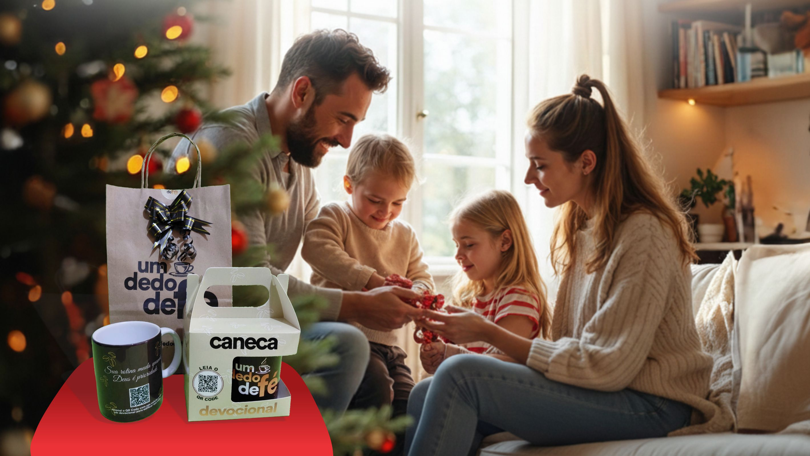
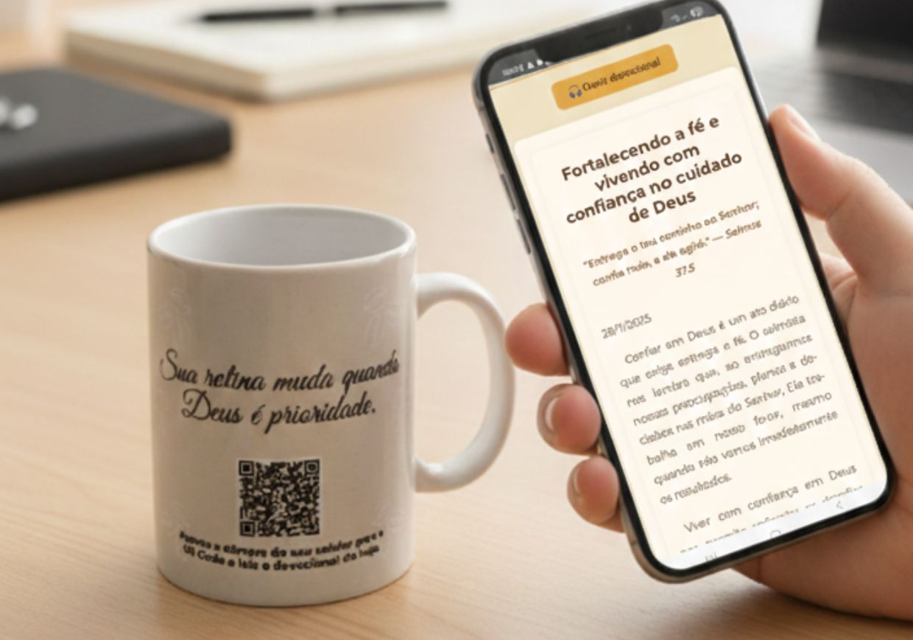
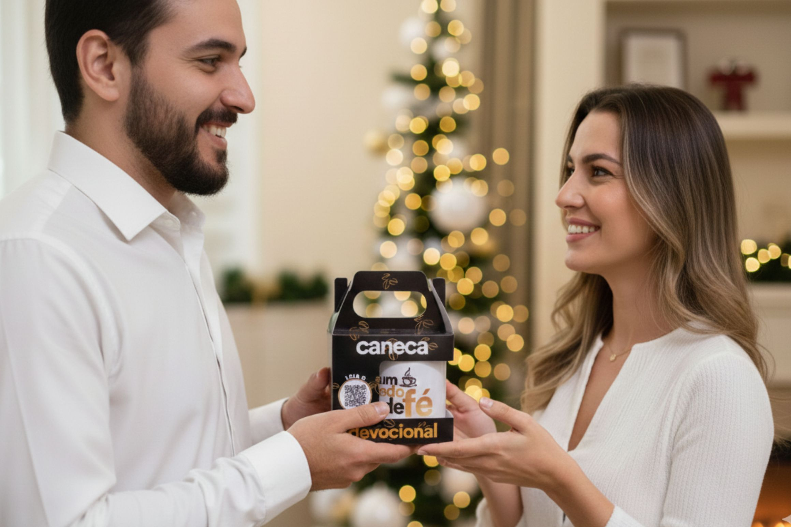

Disponíveis nas Cores
Marrom e Creme

Marrom

Creme

Sua rotina muda quando Deus é prioridade.
PEÇA JÁ A SUAComece o dia com propósito!
Nossa Caneca Devocional foi criada para acompanhar seus momentos de oração e reflexão, trazendo mensagens que fortalecem a fé e aquecem o coração. Perfeita para seu café da manhã com Deus ou para presentear alguém especial.
PEÇA JÁ A SUAMarrom e Creme
Marrom
Creme

Basta escanear o QR code da caneca e receber mensagens diárias que vão inspirar sua fé e trazer reflexão para o seu dia.
“Essa caneca não é só uma simples louça para se tomar algo, penso nela como uma nova chance de me guiar e me manter nos trilhos e caminhos do Senhor. Parece pouco... mas o pouco com rotina um dia se torna muito. E Deus conhece nossos corações, limites e pode nos fazer voar!”
“A caneca devocional se tornou parte da minha rotina. Cada mensagem me lembra do que realmente importa e me aproxima de Deus.”
“Eu amo começar o dia tomando meu café e lendo o devocional que chega no meu celular. É incrível como cada mensagem parece feita pra mim! Essa caneca tem me aproximado ainda mais de Deus.”
